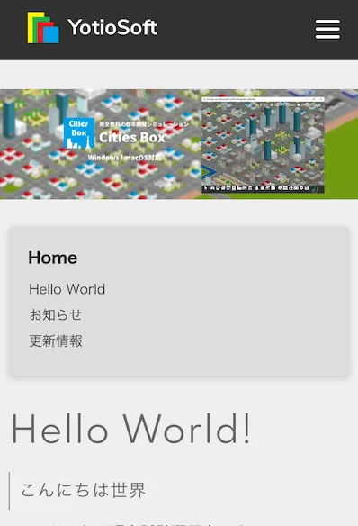
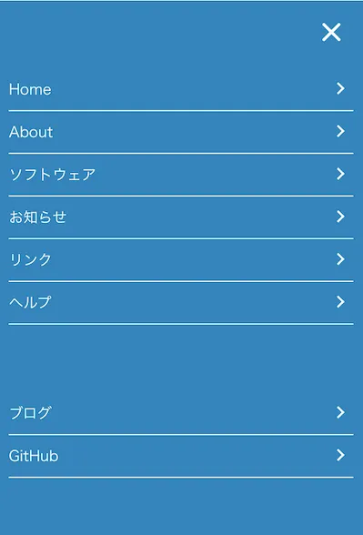

スマホ版サイトを公開しました
お知らせ
スマートフォンでの表示に対応しました。
PC版との主な変更点は以下のとおりです。
ヘッダーメニューをハンバーガーメニューに置き換え
サイドメニューをページの上部に移動
PC版との主な変更点は以下のとおりです。


ハンバーガーメニューは画面右上の三本線のボタンをタップすることで表示されます。
なお、PC上でブラウザのウィンドウを小さくした場合もスマホ版が表示されます。
現在確認されている問題点
現時点で以下の問題点が確認されています。
表が横スクロールできない
ハンバーガーメニューを開いたときにスクロールするとメニュー画面が消える
画像やフッターの文字がやや右側に寄っている
iOSのSafariでアクセスしたとき、カードをタップしても説明が表示されない
なお、ウィンドウサイズ変更時の問題は再読み込みを行うことで回避できます。
今回のスマホ対応では、単に表示幅を狭くするだけではなく、指で操作しやすい導線に置き換えることを意識しました。
特に、PC向けでは左側に固定していたメニューをそのまま残すと画面占有率が高くなってしまうため、上部配置やハンバーガーメニューへの置き換えを行っています。
一方で、ページ数が増えるにつれて、表や画像、複数カラムを前提にしたレイアウトではスマートフォン表示で崩れやすい部分も多く、公開時点ではまだ完全な最適化には至っていませんでした。
そのため、この段階ではまず主要ページを閲覧できることを優先し、細かな崩れや端末依存の問題点は公開後も順次修正していく方針を取りました。
実際に利用してくださる方の環境は Android、iPhone、iPad、小型ノートPC などさまざまであり、ブラウザごとの挙動差も無視できません。
今後も、読みやすさと操作しやすさの両立を目標に、表示速度を大きく損なわない範囲で改善を重ねていく予定です。
サイトの内容が増えるほど調整対象も増えるため、今後も新規ページ追加時にはモバイル表示の確認を継続していきます。
- PCでブラウザのウィンドウの大きさを変更したときの動作：
- ウィンドウを小さくしたとき：サイドメニューが常時画面上部に固定されてしまう
- ウィンドウを大きくしたとき：サイドメニューがスクロール時についてこなくなる
なお、ウィンドウサイズ変更時の問題は再読み込みを行うことで回避できます。
今回のスマホ対応では、単に表示幅を狭くするだけではなく、指で操作しやすい導線に置き換えることを意識しました。
特に、PC向けでは左側に固定していたメニューをそのまま残すと画面占有率が高くなってしまうため、上部配置やハンバーガーメニューへの置き換えを行っています。
一方で、ページ数が増えるにつれて、表や画像、複数カラムを前提にしたレイアウトではスマートフォン表示で崩れやすい部分も多く、公開時点ではまだ完全な最適化には至っていませんでした。
そのため、この段階ではまず主要ページを閲覧できることを優先し、細かな崩れや端末依存の問題点は公開後も順次修正していく方針を取りました。
実際に利用してくださる方の環境は Android、iPhone、iPad、小型ノートPC などさまざまであり、ブラウザごとの挙動差も無視できません。
今後も、読みやすさと操作しやすさの両立を目標に、表示速度を大きく損なわない範囲で改善を重ねていく予定です。
サイトの内容が増えるほど調整対象も増えるため、今後も新規ページ追加時にはモバイル表示の確認を継続していきます。